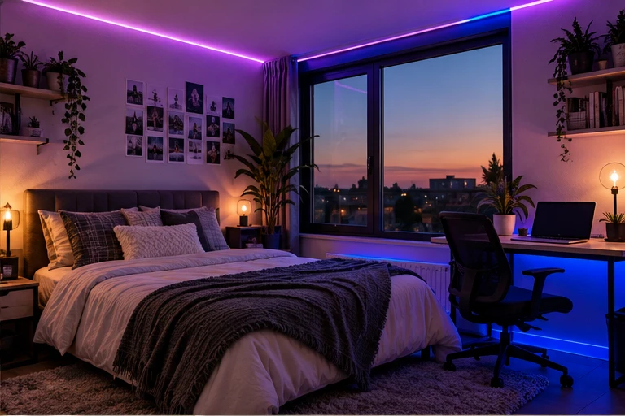

THE NO CURFEW JOURNAL
A little more you.
Every campus day.
Practical ideas for getting dressed, caring for your favourites and making a small room feel like home. Start with what you have.

Three outfit formulas for a graphic T-shirt
A graphic T-shirt already gives an outfit a focal point.
Read the guide ↗
Keep your graphic clothing looking good
Different fabrics and print methods need different care.
Read the guide ↗
Plan an LED room setup before buying
Use a tape measure or a piece of string to follow the exact route you want to light.
Read the guide ↗A laptop cover that actually fits
Two laptops with the same screen size can have different bodies, hinges and port positions.
Read the guide ↗Build more outfits with fewer purchases
Lay out the pieces you already wear regularly.
Read the guide ↗
Pack a lighter tote for a campus day
Check your timetable before packing.
Read the guide ↗